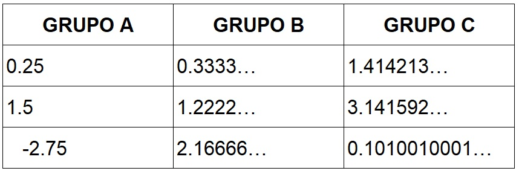
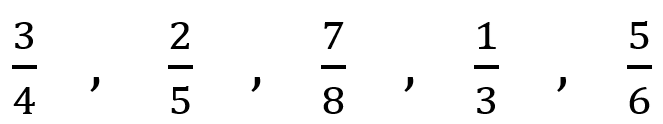
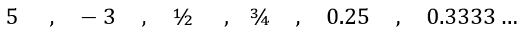
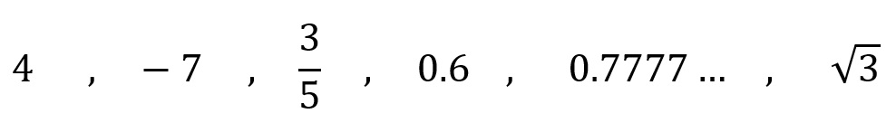

8°
EXPLORACIÓN
1) Situación inicial
⭐Observa los siguientes números:
-3, 1/2, 0.25, 1.4, √2, 3.1416
Actividad individual
- ⭐Ordénalos de menor a mayor.
- Para cada número escribe una frase corta que explique por qué lo ubicaste ahí.
Ejemplos de explicación:
- “Es negativo, por eso va a la izquierda del 0.”
- “Es menor que 1 porque representa una parte de la unidad."
- “Está entre 1 y 2 porque su valor es mayor que 1 pero menor que 2.”
, números entre 0 y 1, números mayores que 1. Estilo escolar, fondo blanco, tipografía clara y legible, sin elementos decorativos innecesarios.”")
3. En pareja o de forma individual responde las siguiente preguntas:
- ¿Cuál de estos números fue más fácil de ubicar? ¿Por qué?
- ¿Cuál te generó más duda?
- ¿Qué número no sabías muy bien cómo interpretar?
2) Actividad de contraste

Compara cada pareja de números. No conviertas todo a fracción, solo razona.
Pareja 1
- 0.5
- 0.3333…
Pareja 2
- 1.25
- 1.2222…
Pareja 3
- 2.0
- 1.9999…
Para cada pareja responde:
-
⭐¿Cuál número es mayor?
-
¿Cómo lo sabes?
-
¿Qué parte te genera duda o inseguridad?
3) Evidencia rápida de exploración
En tu cuaderno escribe el título: “Mis ideas iniciales sobre los números”
Luego responde con tus propias palabras:
- Para mí, un número racional es…
- Yo creo que un número irracional es…
- ⭐Un decimal que tiene puntos suspensivos (por ejemplo 0.3333…) puede escribirse como fracción:
- Sí
- No
- No estoy seguro
Explica brevemente tu respuesta.
Recurso interactivo: Representación de fracciones
Enlace: https://www.geogebra.org/m/z8ygsxHS
Enlace: https://www.geogebra.org/m/x5y6pmx2
ANALIZA
1) Observemos con atención: ¿todos los decimales se comportan igual?
Lee con cuidado los siguientes números:

Actividad (trabajo en parejas)
- Describe con tus palabras qué ocurre con los decimales en cada grupo.
- Completa la frase para cada grupo:
- “Los decimales de este grupo __________.”
3. ⭐Marca con ✔️ los números que crees que se pueden escribir como fracción y con ❓ los que no estás seguro.
2) Organizamos nuestras ideas
A partir del análisis anterior, podemos identificar tres comportamientos:
- Algunos decimales terminan.
- Otros decimales se repiten siguiendo un patrón.
- Otros decimales no terminan ni se repiten.
Reflexiona y responde:
¿Crees que el comportamiento del decimal tiene relación con el tipo de número? Explica tu respuesta con un ejemplo.
3) Actividad central: de la fracción al decimal
Observa las siguientes fracciones:

Actividad
- ⭐Decide si el decimal de cada fracción termina o se repite.
- Justifica tu decisión con palabras, no solo con el resultado.
Pista para pensar:
Algunas fracciones generan decimales que terminan y otras generan decimales que se repiten. Observa el número que aparece abajo de la fracción (denominador).
4) Del decimal al tipo de número
⭐Clasifica cada número y explica por qué:
- 0.125
- 0.272727…
- 2.1010010001…
Completa la frase en cada caso:
“Este número parece ser __________ porque su decimal __________.”
CONOCE ALGO NUEVO
Hasta ahora has visto que los números pueden escribirse de diferentes formas: como enteros, fracciones o decimales.
Para entender mejor estas diferencias, vamos a organizar los números según cómo se comportan.
1) Números racionales
Un número es racional si se puede escribir como una fracción, es decir, como el cociente entre dos números enteros, donde el denominador no es cero.
Ejemplos de números racionales:

Cuando un número racional se escribe en forma decimal, pueden pasar dos cosas:
- El decimal termina (como 0.25).
- El decimal se repite siguiendo un patrón (como 0.3333…).
2) Números irracionales
Existen números que no se pueden escribir como fracción.
Cuando se escriben en forma decimal: no terminan, y no se repiten siguiendo un patrón.
A estos números los llamamos irracionales.
Ejemplos:
√2 ≈ 1.414213…
π ≈ 3.141592…
Estos números también se pueden ubicar en la recta numérica, aunque no tengan una escritura decimal exacta.
3) El conjunto de los números reales
Los números reales forman un conjunto que incluye:
Todos los números racionales, y todos los números irracionales.
Esto significa que todos los números que puedes ubicar en la recta numérica son números reales.
, enteros (-3, 0), racionales (1/2, 0.25, 0.3333…), irracionales (√2, π). Estilo escolar, fondo blanco, colores suaves, tipografía clara.")
4) Representamos los números reales
Observa el siguiente esquema que organiza los conjuntos numéricos:
- Los números naturales están dentro de los enteros.
- Los enteros están dentro de los racionales.
- Los racionales y los irracionales forman juntos los números reales.
Recurso interactivo
Observa el siguiente recurso para ver cómo se ubican distintos números reales en la recta numérica.
Enlace: https://www.geogebra.org/m/hGxcN48a
ACTIVIDADES DE APRENDIZAJE
Actividad 1. Clasifico y explico
Observa los siguientes números:

1. ⭐Clasifica cada número como:
natural, entero, racional o irracional.
2. Escribe una explicación corta para cada número usando frases como:
- “Es un número racional porque…”
- “Es un número irracional porque…”
3. Si un número pertenece a más de un conjunto, indícalo.
Actividad 2. ¿Dónde estaría en la recta numérica?

Sin dibujar la recta completa, responde:
1. ⭐¿Entre qué dos números enteros se encuentra cada uno?
- 3/5
- -2.4
- √2
- 1.75
2. Explica cómo lo sabes, sin usar calculadora.
Ejemplo de respuesta: “√2 está entre 1 y 2 porque su valor aproximado es un poco mayor que 1.”
Actividad 3. Comparo y decido
⭐Compara cada pareja y responde cuál es mayor.
Luego, explica por qué.
a) 1/2 y 0.6
b) 0.3333… y 0.35
c) √2 y 1.4
No basta con decir el resultado.
La explicación es lo más importante.
⭐Actividad 4. Elijo la mejor representación
En cada caso, responde:
¿Es mejor usar una fracción, un decimal o una aproximación? ¿Por qué?
- Repartir una pizza en partes iguales entre 4 personas.
- Medir la estatura de una persona.
- Calcular el largo de la diagonal de un cuadrado de lado 1 m.
⭐Actividad 5. Cierro ideas
Completa las frases con tus propias palabras:
- Un número racional se puede reconocer porque __________.
- Un número irracional se diferencia porque __________.
- Todos los números que se pueden ubicar en la recta numérica forman el conjunto de __________.
Fuentes bibliográficas
Ministerio de Educación Nacional – MEN. (2006). Estándares Básicos de Competencias en Matemáticas. Bogotá, Colombia: MEN.
Ministerio de Educación Nacional – MEN. (2016). Derechos Básicos de Aprendizaje (DBA) en Matemáticas – Básica Secundaria. Bogotá, Colombia: MEN.
Ministerio de Educación Nacional. (2017). Vamos a aprender matemáticas 8°. Bogotá, Colombia: Ministerio de Educación Nacional.
GeoGebra GmbH. (2024). Recursos interactivos para la enseñanza de los números reales. Recuperado de https://www.geogebra.org